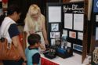
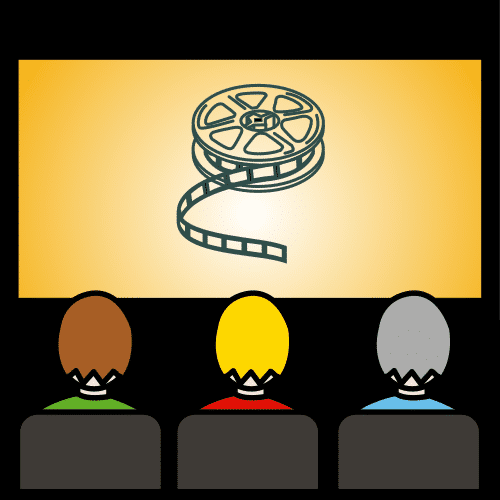
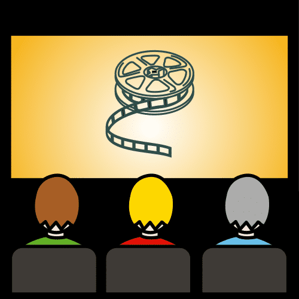

Dictionary
Fair

- Example:
-
There is an invention fair at the school.
Hay una feria de inventos en el colegio.
- Spanish word:
-
Feria
- Audio:
Outfit
- Example:
-
This is a perfect outfit for the party.
Es un vestuario perfecto para la fiesta.
- Spanish word:
-
Vestuario
- Audio:
 You have learnt a lot about inventions.
You have learnt a lot about inventions..png "Saber")
 You know a lot about inventions.
You know a lot about inventions.

  Remember the video of the presentations.
 Remember the video of the presentations.


 Follow these instructions and you become a great inventor!
Follow these instructions and you become a great inventor!

.png "Inventar") Tips for a perfect invention.
Tips for a perfect invention. You can read some of the inventions and lapbooks.
You can read some of the inventions and lapbooks.